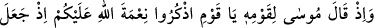
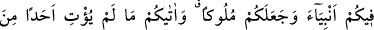
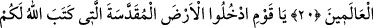
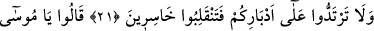
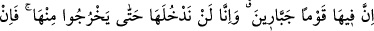
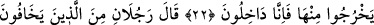
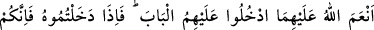
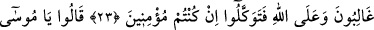
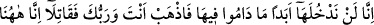
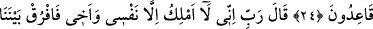
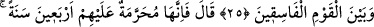
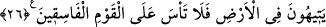
HZ. MÛSA VE
ARZ-I MUKADDES
20- Mûsâ, kavmine demişti ki: Ey kavmim! Allah’ın size olan nîmetini hatırlayın;
zîrâ O, içinizden peygamberler çıkardı ve sizi hükümdarlar kıldı. Âlemlerde hiçbir
kimseye vermediğini size verdi.
21- Ey kavmim! Allah’ın size (vatan olarak) yazdığı mukaddes toprağa girin ve
arkanıza dönmeyin, yoksa kaybederek dönmüş olursunuz.
22- Onlar şu cevabı verdiler: Yâ Mûsâ! Orada zorba bir toplum var; onlar oradan
çıkmadıkça biz oraya aslâ girmeyeceğiz. Eğer oradan çıkarlarsa biz de hemen
gireriz.
23- (Allah’tan) Korkanlardan Allah’ın kendilerine lütufda bulunduğu iki kişi şöyle
dedi: Onların üzerine kapıdan girin; oraya girdiğiniz zaman muhakkak siz gâlip
gelirsiniz. Eğer mü’minler iseniz ancak Allah’a güvenin.
24- Dediler ki: «Ey Mûsâ! Onlar orada bulundukları müddetçe biz oraya asla
girmeyiz; şu halde sen ve Rabbin gidin savaşın; biz burada oturacağız.»
25- Mûsâ: «Rabbim! Ben kendimden ve kardeşimden başkasına hâkim
olamıyorum; bizimle, bu yoldan çıkmış toplumun arasını ayır.» dedi.
26- Allah, «Öyleyse orası (arz-ı mukaddes) onlara kırk yıl yasaklanmıştır; (bu